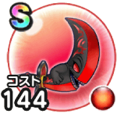

血染めの魔剣
覚醒千里行よろいのきし編覚醒千里行ランプのまじん編覚醒千里行ボーンファイター編こころ最大コスト+4スキルの斬撃ダメージ+8%ゾンビ系へのダメージ＋10%麻痺耐性+10%【夜間】スキルの斬撃ダメージ+4% / 8.5点
くわしい特徴
【ランク特殊効果】 こころ最大コスト+4スキルの斬撃ダメージ+10%ゾンビ系へのダメージ＋10%麻痺耐性+20%【夜間】スキルの斬撃ダメージ+4%【夜間】すばやさ+20こころ最大コスト+4スキルの斬撃ダメージ+8%ゾンビ系へのダメージ＋10%麻痺耐性+10%【夜間】スキルの斬撃ダメージ+4%